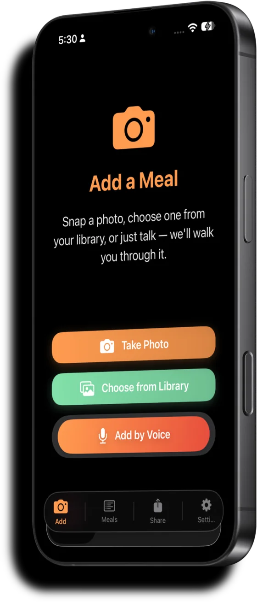
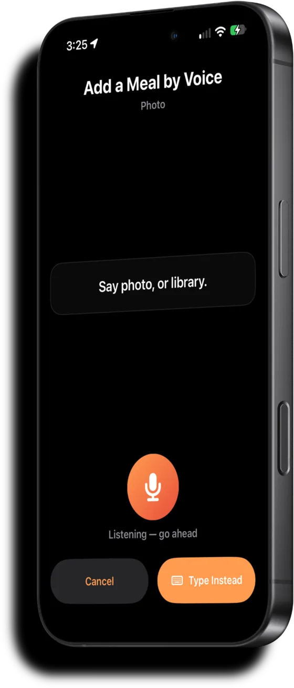
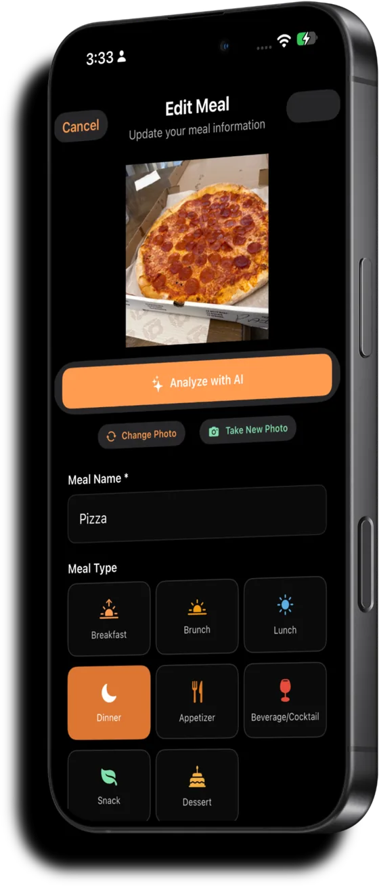
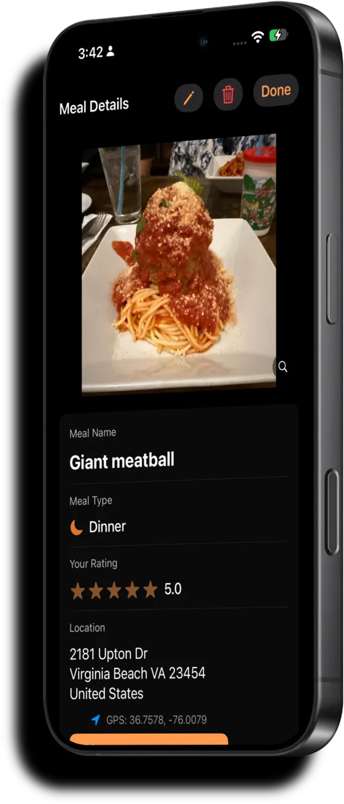
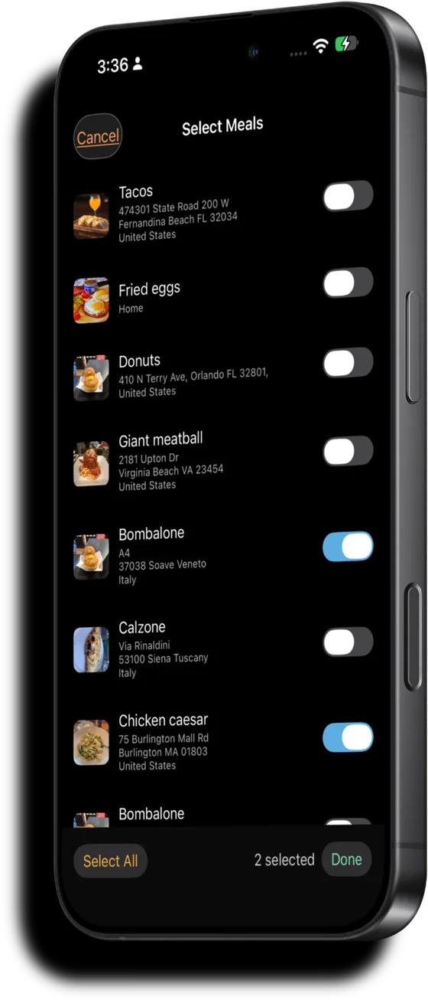

Meal Memories
Never forget a great meal.
Save the meals you love and the memories that go with them. Snap a photo, pick one from your library or just talk, and let AI help fill in the details. Ratings, prices and locations make every favorite easy to find and enjoy again.






Scroll sideways to see every screen
What you can do
Snap, choose or talk
Take a photo, pick one from your library, or add a meal by voice. The app walks you through it.
Analyze with AI
One tap on Analyze with AI helps fill in the details from your photo. Review and edit before saving.
Ratings, prices and places
Rate every meal, note what it cost, and keep the address and GPS location of where you ate it.
Breakfast to dessert
Sort meals as breakfast, brunch, lunch, dinner, appetizer, drink, snack or dessert.
Search and map
Search by meal, location or restaurant, or switch to the map and set a range to see what’s nearby.
Share your favorites
Pick the meals you want and share them with friends and family.
See Meal Memories in action
A short demo video is on its way.
Get Meal Memories
Available now on the App Store.